# CMSC 6950 FINAL PROJECT Process, Analyze and Present the current Canadian Covid-19 data. #Group 5 Members <ul> <li>Miranda Boutilier</li> <li>Collins Bekoe</li> <li>Victor Abodunrin</li> </ul> --- # Agenda <ol> <li>Minimum Core Tasks</li> <li>Free Choice Tasks</li> </ol> --- # Minimum Core Tasks #Q1 --- #Q2 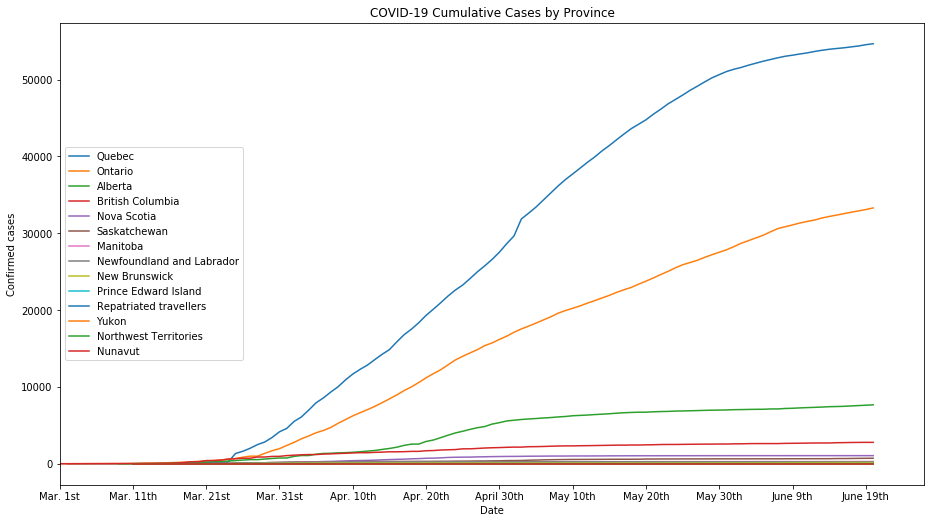 --- # Q2 (Contd.) 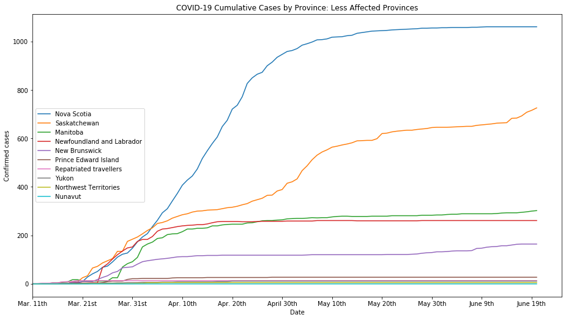 --- # Q3 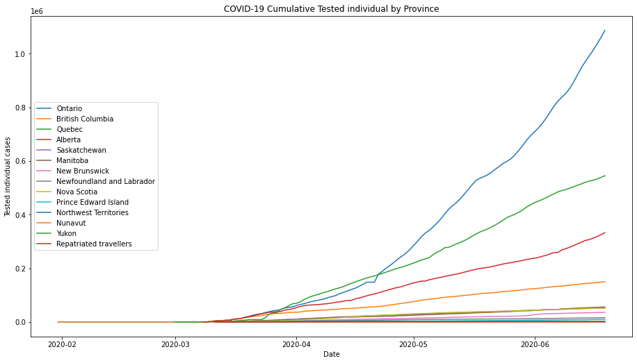 --- # Q4 - Number of New Cases Per Day 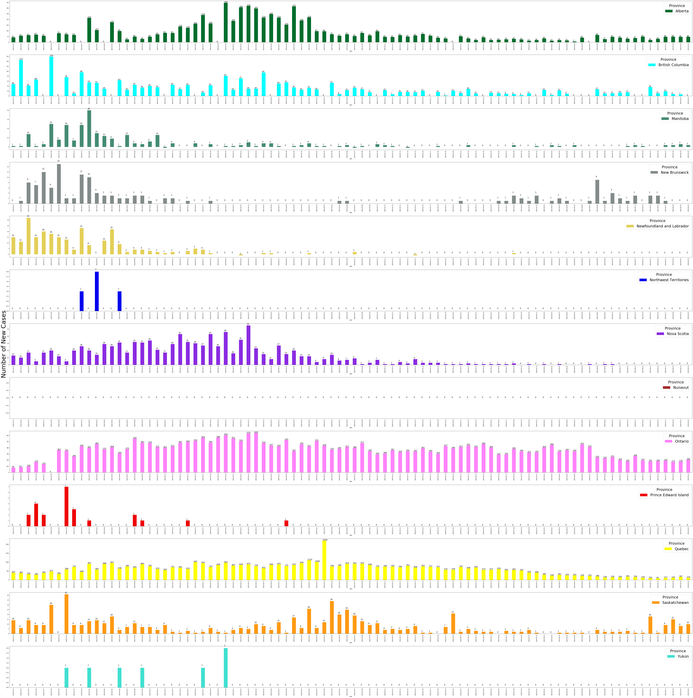 --- # Q4 - Alberta Plot <ul> <li>The theme behind the plot for this question is understandability</li> <li>A bar plot</li> <li>Divided into Subplots. Each Subplot represents a Province</li> </ul> 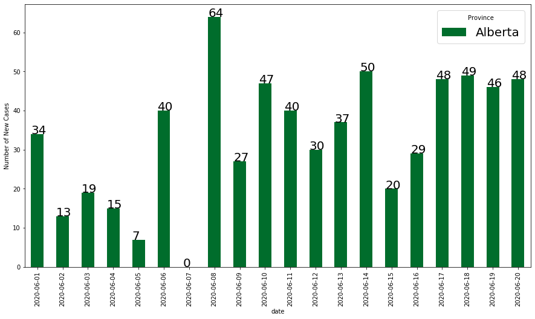 --- # Q4 - Other Provinces Plots <center>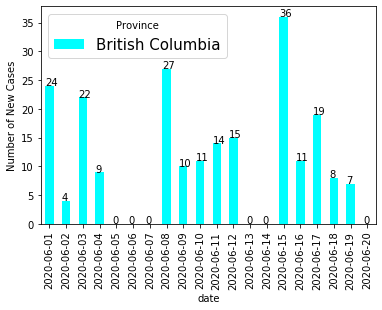 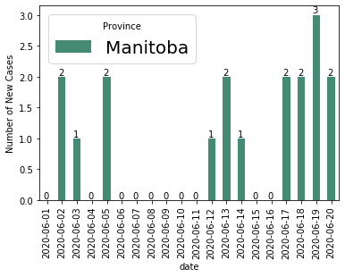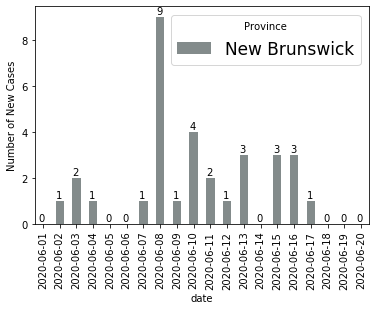</center> <center>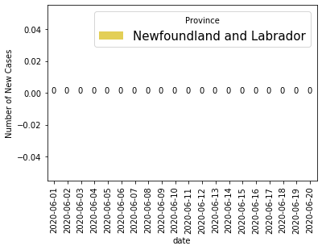 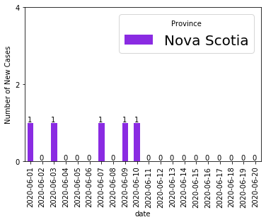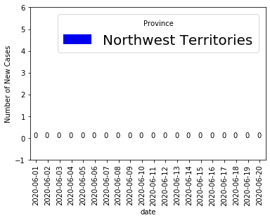</center> <center>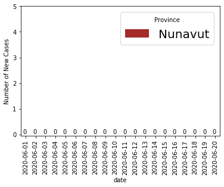 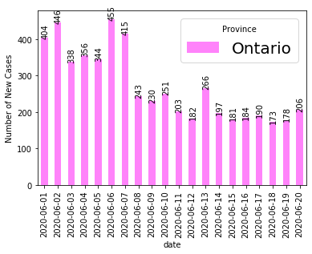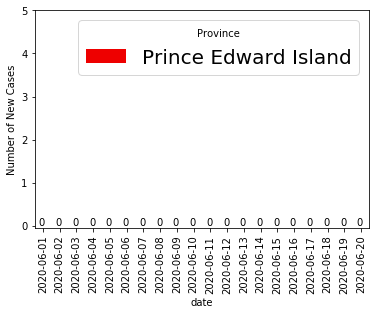</center> <center>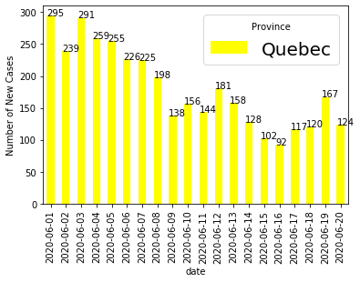 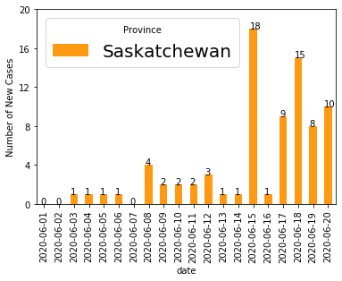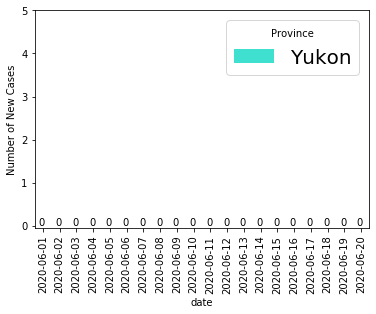</center> --- # Q5 <ul> <li>The code for Q5 takes in 3 arguments- province, specification of cases or deaths, and a date</li> <li>Using argparse to take in input from the command line, the code computes the doubling rate using the equation below. Here, we used t_1=t_2-7.</li> <li>To form the data for Q6, a shell script was used to run the code for all provinces/dates.</li>- </ul> <center>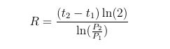</center> --- # Q6- Canada <center>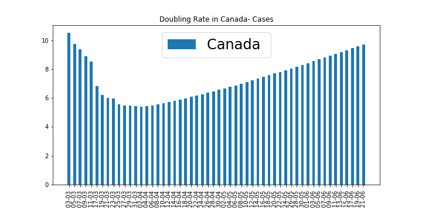</center> <center>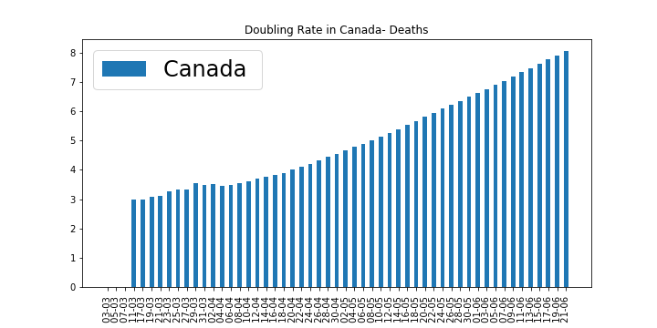</center> --- # Q6- Cases <center><img src = "q6casesQuebec .png" width = "230"> <img src = "q6casesOntario .png" width = "230"><img src = "q6casesAlberta .png" width = "230"></center> <center><img src = "q6casesBritish Columbia .png" width = "230"> <img src = "q6casesNova Scotia .png" width = "230"><img src = "q6casesSaskatchewan .png" width = "230"></center> <center><img src = "q6casesManitoba .png" width = "230"> <img src = "q6casesNewfoundland and Labrador .png" width = "230"><img src = "q6casesNew Brunswick .png" width = "230"></center> <center><img src = "q6casesPrince Edward Island .png" width = "230"><img src = "q6casesYukon .png" width = "230"><img src = "q6casesNorthwest Territories .png" width = "230"></center> --- # Q6- Deaths <center><img src = "q6deathsQuebec .png" width = "230"> <img src = "q6deathsOntario .png" width = "230"><img src = "q6deathsAlberta .png" width = "230"></center> <center><img src = "q6deathsBritish Columbia .png" width = "230"> <img src = "q6deathsNova Scotia .png" width = "230"><img src = "q6deathsSaskatchewan .png" width = "230"></center> <center><img src = "q6deathsManitoba .png" width = "230"> <img src = "q6deathsNova Scotia .png" width = "230"><img src = "q6deathsNewfoundland and Labrador .png" width = "230"></center> --- # Free Choice Task - An Interactive Plot 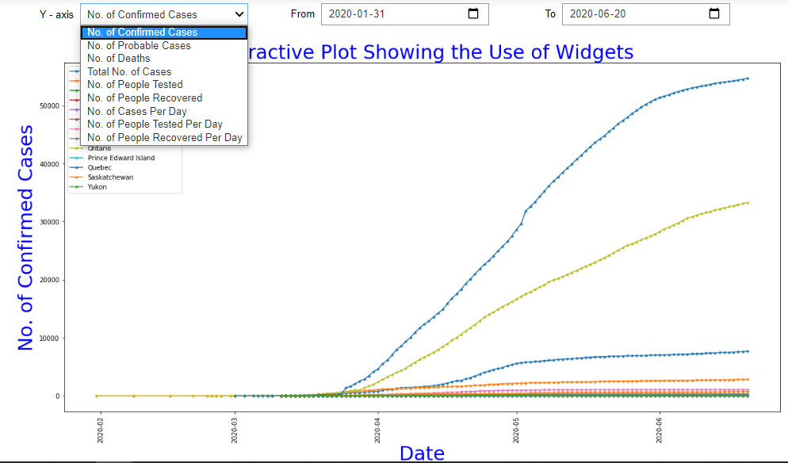 --- # Interactive Plot. <ul> <li>The user has flexibility in how they view the plot.</li> <li>Dropdown to change the values plotted on the Y-axis.</li> <li>DatePickers to select a date range for the data being viewed.</li> </ul> 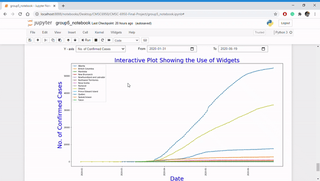 --- # Thanks for Watching